쟁취할 가치가 있는 미래
팀 기반 액션 • 무료 플레이
신규영웅
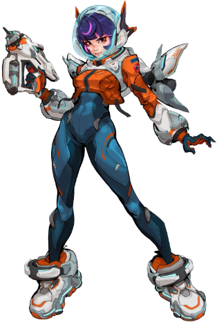
Juno Teo Minh
One small step at a time.
화성에서 태어난 최초의 인류,
주노는 우주 시대의 기술을 사용하여
자신의 궤도를 침범하는
문제를 해결합니다.
주노는 언젠가 고향 행성을
구원하려는 결의에 차 있습니다.
주노 테오 민은 화성을 테라포밍하려는
루청 인터스텔라의 비밀 다단계 계획, 붉은 약속 프로젝트가
진행되던 중 화성에서 태어났다. 먼지 폭풍이 행성을 휩쓸기 시작하자,
붉은 약속 기지와 루청 사이의 연락이 끊기면서 프로젝트의 미래도
위태로워졌다. 붉은 약속 팀은 주노를 지키
이제 주노는 너무 늦기 전에 고향과 가족을 구할 방법을
찾고자 굳게 결의하고 있다.
동료 영웅들과 함께 싸우세요.
친구들을 모으고, 팀을 이루어 오버워치 2의 세계로 빠져들어 보세요.
강력한 무기
근접 무기나 샷건부터 원거리에서 타격할 수 있는
장거리 저격 소총에 이르기까지,
영웅마다 각자의 전투 방식에
어울리는 자신만의 무기를 사용합니다.
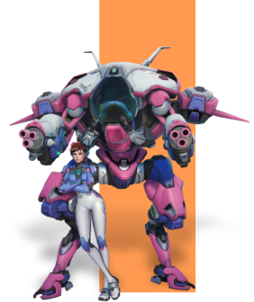
팀을 이루는 세 가지 역할
돌격 영웅은 전장에서 아군의 공간을 확보하고,
공격 영웅은 적을 처치하며,
지원 영웅은 팀원을 치유하거나 영웅의 능력을 끌어올려 줍니다.
어떤 역할이 마음에 드시나요?
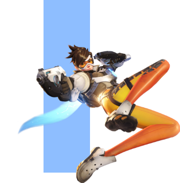
궁극기로 게임의
판도를 뒤집으세요
전장을 관통하며 노도하는 용,
보이는 모든 것을 파괴하는 자폭 메카,
적을 멈추게 하는 EMP 폭발 등
다양한 기술을 사용하세요.
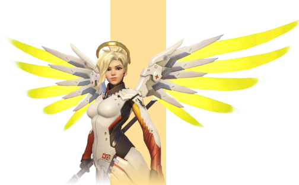
새로운 영웅들
개성 넘치는 새로운 영웅이 계속해서 합류합니다.
돌격을 진두지휘하 는 것을 좋아하는 플레이어, 적을 기습하거나
아군을 지원하는 것을 좋아하는 플레이어 등
모두를 위한 새로운 영웅이 준비되어 있습니다.
세계에서 가장 악명 높은 해커로 손꼽히는 솜브라는
정보를 이용해 권력자들을 조종한다.
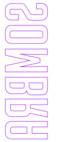
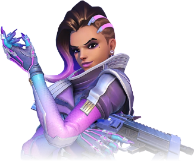
“리퍼”라고만 알려진 검은 로브의 테러리스트에 대해 이야기하는 사람들이 있다.
그의 정체와 목적은 베일에 싸여 있다. 알려진 것은 그가 나타나는 곳에 죽음이 따른다는 사실뿐이다.
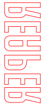
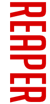
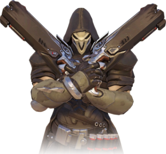
위도우메이커는 더할 나위 없는 암살자다.
참을성 있게 한 순간의 빈틈을 노리고, 아무런 자비 없이 효과적인 살상을 하는 그녀에게는
일말의 감정도 후회도 없다.
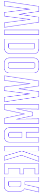
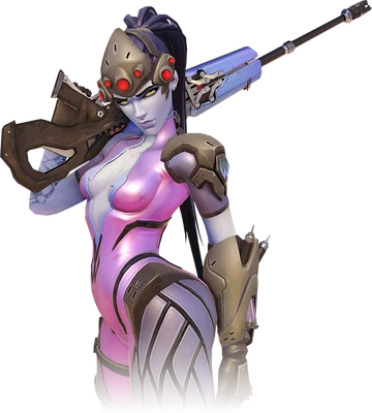
